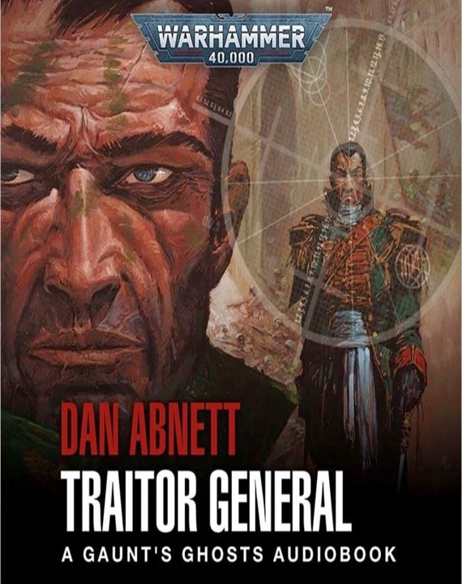
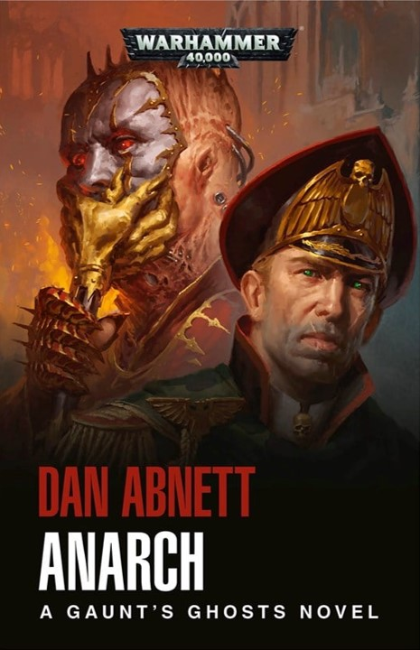
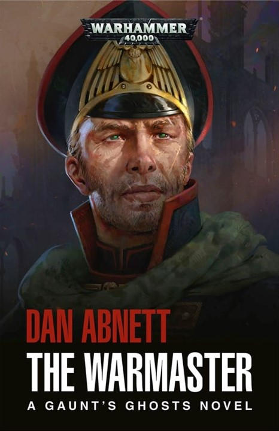

-
Traitor General

Infiltrándose en Gereon controlado por el enemigo, los Fantasmas de Gaunt deben lidiar con asesinos demoníacos, aliados reacios y la corrupción del propio Caos. Su misión: encontrar y detener a un general traidor.
-
The Anarch

La batalla por Urdesh ha comenzado, y el resultado determinará el destino de la Cruzada de los Mundos de Sabbat. Ibram Gaunt, ahora mano derecha del Señor de la Guerra, y sus Fantasmas tienen la clave de la victoria, pero ¿podrán derrotar al siniestro Anarquista y sus Hijos de Sek?
-
The Warmaster

Al regresar al corazón de la cruzada después de una misión peligrosa, el Coronel-Comisario Gaunt se ve envuelto en intrigas mientras sus Fantasmas enfrentan una amenaza a su propia existencia.